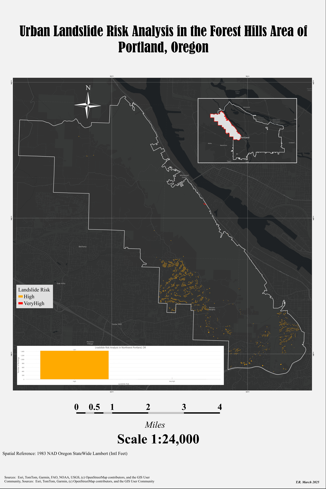

Landslide Risk Assessment
Of the Forest Hills area of Portland Oregon
.

For this project I had a DEM of the target area, a shape file with all of the buildings in the neighborhood, a shapefile for all of the streams in Portland,a raster with the soil distribution in Oregon, a shapefile from the Major Lands Resource Area with information on the soils in Oregon,a canopy legend raster file, an impervious legend raster file, and a color classification raster file.
I then clipped the data using the boundary of the target area. using the Distance Accumulation tool I created a raster that shows the accumulated distace of each cell from a stream. Using each of the rasters and a Raster Function template I then created a raster visualizing landslide suceptibility across five catagories, very low, low, moderate, high, and very high. Because I was focusing on areas at high or very high risk I then used the reclassify tool to only show those areas. I then converted the raster into a polygon and used the find by intersect tool to select all buildings in the high or very high risk areas.